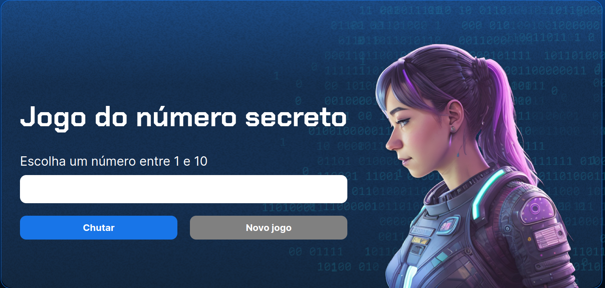
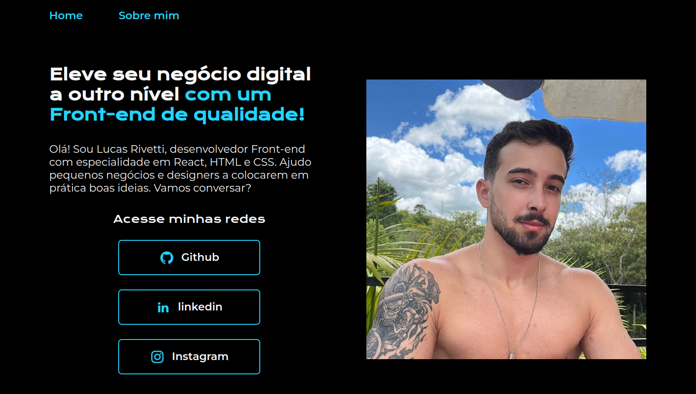

Prazer, meu nome é Lucas Rivetti
Entusiasmado pelo aprendizado e dedicado a aprender cada dia mais sobre programação.
Sobre mim
Olá! Sou Lucas Rivetti, estudante de Ciência da Computação pela Universidade Federal de São João del-Rei (UFSJ). Optei por seguir este curso pois sempre fui apaixonado por tecnologia, jogos e áreas similares, além de considerar a computação um âmbito extremamente rico, amplo e atrativo.
Comecei a estudar programação por volta de novembro de 2023, logo após a conclusão do ENEM. Desde então, tenho mantido uma rotina de estudos consistente, com foco, principalmente, na plataforma Alura, em que já conquistei diversos certificados e muito conhecimento. No momento, estou focado no front-end e tenho me aperfeiçoado bastante em HTML e CSS como base. Ademais, também possuo a pretensão de continuar minha jornada dando enfoque ao React.
Portanto, meu principal objetivo é explorar as inúmeras áreas e linguagens de programação, a fim de encontrar meu caminho profissional, visando a procura por uma área que desperte o meu interesse e pela qual eu tenha paixão. Além do anseio de ser realizado com o meu trabalho e alcançar a liberdade financeira para garantir segurança e lazer.
Habilidades
- HTML inicial
- CSS inicial
- C inicial
- JavaScript inicial
- Aprendizado contínuo
- Comprometimento
- Proatividade
- Resiliência
Projetos
Jogo do Número secreto
Um pequeno projeto de um jogo com números aleatórios feito com o intuito de treinar as habilidades de manipular o JavaScript juntamente com o HTML. Fui responsável pelo JavaScript do projeto.
 JogoPortfólio Teste
Desenvolvido para testar conhecimentos sobre HTML e CSS, este é um portfólio simples e prático que utiliza os conceitos básicos das tecnologias, além de um projeto de design do Figma.
 Portfólio